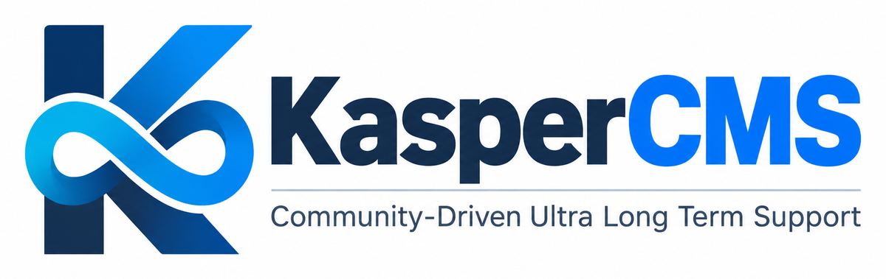

Security fixes
Public TYPO3 core security fixes that affect 12.4 are backported, tested on PHP 8.1 to 8.5 and documented with their CVE.

KasperCMS is a community-driven fork of TYPO3 CMS 12.4 that continues to maintain 12.4 installations after the end of community support – with backported security fixes, carefully selected bug fixes and a public record of every change.
Existing 12.4 sites keep running as they are. KasperCMS only changes what is needed to keep them maintained and stable.
Public TYPO3 core security fixes that affect 12.4 are backported, tested on PHP 8.1 to 8.5 and documented with their CVE.
Upstream bug fixes from TYPO3 13.4 and 14.x that apply to 12.4 without risk are ported together with their tests.
A public coverage matrix for every release lists each advisory as fixed or as not affecting 12.4, with a reason.
No new features, no breaking changes, no database schema changes. Replace the source, clear the caches, done.
Use the release package with symlinks, or install the typo3/cms-* packages from the KasperCMS Composer repository.
Developed in the open on GitHub. Backports, tests and reviews of the coverage matrix are welcome.
Automated daily checks compare public advisories and upstream changes with the KasperCMS branch.
GitHub advisories, the TYPO3 security feed and upstream commits are checked every day.
Each advisory and bug fix is checked against the 12.4 code base and its affected versions.
Fixes are cherry-picked from TYPO3 13.4 and 14.x, adapted to 12.4 and verified with unit and functional tests.
A new 12.4.45.N release with checksum, release notes and coverage matrix.
KasperCMS replaces the TYPO3 12.4 source of your installation. No database updates are necessary.
Download the release package and point the usual symlinks to it.
curl -LO {{LATEST_TARBALL}}
tar -xzf kaspercms_src-{{LATEST_VERSION}}.tar.gz
ln -sfn kaspercms_src-{{LATEST_VERSION}} typo3_src
ln -sfn typo3_src/typo3 typo3
ln -sfn typo3_src/index.php index.phpVerify the SHA-256 checksum from the release page and clear all caches afterwards.
Start from the example composer.json and adapt name and packages.
mkdir my-site && cd my-site
curl -LO https://agilastic.github.io/kaspercms/example/composer.json
composer installThe example adds the KasperCMS repository as canonical source for typo3/cms-* and allows the KasperCMS versions in the advisory blocking of Composer 2.9+. Details in Installation with Composer.
Every release documents its fixes in a coverage matrix. Only the latest release receives security fixes.
To keep the effort sustainable, KasperCMS covers every second TYPO3 LTS version. Support starts when the free community support ends.
Community support ended 2026-04-30
Active, at least until 2030-12-31Community support until 2029-06-30
Planned from 2029-07-01Not yet announced
PlannedCommunity support until 2027-12-31
Not plannedCommunity support ended 2024-10-31
Not plannedSupport periods are reviewed every year. The end of support is announced at least 12 months in advance.
Please do not report vulnerabilities in public issues. Choose the right recipient:
Also when found in KasperCMS: report it to the TYPO3 Security Team at security@typo3.org, so that all TYPO3 users benefit from the fix.
For example a regression introduced by an adapted backport: report it privately through a GitHub security advisory of the KasperCMS repository.
KasperCMS is a community effort. Backports, tests and reviews of the coverage matrix are welcome.